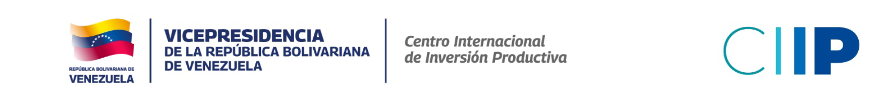
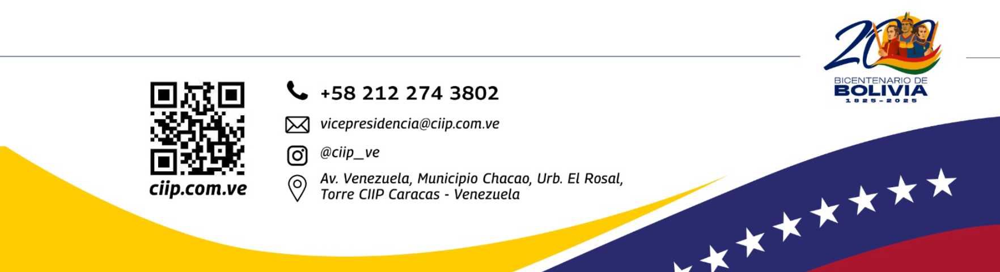
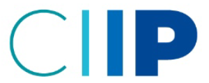

La hoja que genera la Ventanilla cuando el inversionista autoriza al CIIP en un trámite. Las cuatro llevan el logo del CIIP y la letra de las plantillas de Atlas (Helvetica Neue, justificada a 14,5 px), con el mismo texto y los mismos datos, para comparar solo la forma. Ninguna lleva firma: la aceptación en línea queda como constancia.
El oficio general de Atlas tal cual: el membrete de la Vicepresidencia y el CIIP arriba, el pie con el QR, los contactos y la franja tricolor abajo. Es la que ya está hecha en el panel.

Yo, Franklin Reyes, en mi condición de representante legal de Bianchi Agroindustrias, C.A., sociedad domiciliada en Av. Principal, Galpón 4, Charallave, Municipio Cristóbal Rojas, inscrita en el Registro Mercantil Primero del Distrito Capital, bajo el N.º 12, Tomo 45-A, en fecha 19 de agosto de 2026, y en el Registro Único de Información Fiscal bajo el N.º J-40123456-7, por medio del presente autorizo a la Coordinación Legal del Centro Internacional de Inversión Productiva (CIIP) para que, a través del personal que designe, realice en nombre de Bianchi Agroindustrias, C.A., las gestiones necesarias para su registro y/o inscripción ante el Servicio Nacional Integrado de Administración Aduanera y Tributaria.
Esta autorización se otorga en línea, mediante aceptación expresa en la Ventanilla Única del Inversionista, sin necesidad de firma autógrafa.

Como las fichas de Atlas: el logo del CIIP arriba a la izquierda y el número y la fecha a la derecha. Debajo, los datos en una rejilla de seis casillas (quién, empresa, RIF, registro, trámite y ente) y después el texto. La aceptación va en un recuadro verde, y el pie es una línea fina con los contactos.

- Representante legal
- Franklin Reyes
- Empresa
- Bianchi Agroindustrias, C.A.
- RIF
- J-40123456-7
- Registro Mercantil
- Primero del Distrito Capital · N.º 12, Tomo 45-A
- Trámite
- RIF de la empresa
- Ente
- Servicio Nacional Integrado de Administración Aduanera y Tributaria
Yo, Franklin Reyes, en mi condición de representante legal de Bianchi Agroindustrias, C.A., sociedad domiciliada en Av. Principal, Galpón 4, Charallave, Municipio Cristóbal Rojas, inscrita en el Registro Mercantil Primero del Distrito Capital, bajo el N.º 12, Tomo 45-A, en fecha 19 de agosto de 2026, y en el Registro Único de Información Fiscal bajo el N.º J-40123456-7, por medio del presente autorizo a la Coordinación Legal del Centro Internacional de Inversión Productiva (CIIP) para que, a través del personal que designe, realice en nombre de Bianchi Agroindustrias, C.A., las gestiones necesarias para su registro y/o inscripción ante el Servicio Nacional Integrado de Administración Aduanera y Tributaria.
Una banda azul del CIIP en el borde izquierdo, como la barra lateral de Atlas, y el logo arriba. El título va en Instrument Serif, la letra de los titulares de Atlas. El texto queda solo, con la firma alineada a la izquierda y una franja tricolor fina al pie.
AUT-2026-000001
Yo, Franklin Reyes, en mi condición de representante legal de Bianchi Agroindustrias, C.A., sociedad domiciliada en Av. Principal, Galpón 4, Charallave, Municipio Cristóbal Rojas, inscrita en el Registro Mercantil Primero del Distrito Capital, bajo el N.º 12, Tomo 45-A, en fecha 19 de agosto de 2026, y en el Registro Único de Información Fiscal bajo el N.º J-40123456-7, por medio del presente autorizo a la Coordinación Legal del Centro Internacional de Inversión Productiva (CIIP) para que, a través del personal que designe, realice en nombre de Bianchi Agroindustrias, C.A., las gestiones necesarias para su registro y/o inscripción ante el Servicio Nacional Integrado de Administración Aduanera y Tributaria.
Esta autorización se otorga en línea, mediante aceptación expresa en la Ventanilla Única del Inversionista, sin necesidad de firma autógrafa.
El logo del CIIP centrado y, debajo, «Coordinación Legal». En vez de la línea de firma, un sello enmarcado con «Aceptada en línea», el número de constancia, la fecha y la hora. Abajo se mantiene el pie institucional del oficio, con el QR y la franja tricolor.
Yo, Franklin Reyes, en mi condición de representante legal de Bianchi Agroindustrias, C.A., sociedad domiciliada en Av. Principal, Galpón 4, Charallave, Municipio Cristóbal Rojas, inscrita en el Registro Mercantil Primero del Distrito Capital, bajo el N.º 12, Tomo 45-A, en fecha 19 de agosto de 2026, y en el Registro Único de Información Fiscal bajo el N.º J-40123456-7, por medio del presente autorizo a la Coordinación Legal del Centro Internacional de Inversión Productiva (CIIP) para que, a través del personal que designe, realice en nombre de Bianchi Agroindustrias, C.A., las gestiones necesarias para su registro y/o inscripción ante el Servicio Nacional Integrado de Administración Aduanera y Tributaria.
Las cuatro, lado a lado
| Forma | Arriba | Los datos | La aceptación | Abajo |
|---|---|---|---|---|
| 1 · Oficio institucional | Membrete de la Vicepresidencia y el CIIP | Dentro del párrafo | Línea pequeña bajo el nombre | Pie oficial con QR y franja |
| 2 · Ficha de Atlas | Logo CIIP, número y fecha | Rejilla de seis casillas y el párrafo | Recuadro verde | Línea fina con los contactos |
| 3 · Sobria con banda azul | Logo CIIP y banda lateral | Dentro del párrafo | Línea pequeña bajo el nombre | Franja tricolor fina |
| 4 · Constancia con sello | Logo CIIP centrado | Dentro del párrafo | Sello enmarcado con el número | Pie oficial con QR y franja |
Se pueden combinar: por ejemplo, la rejilla de la 2 dentro del oficio de la 1, o el sello de la 4 en cualquiera de las otras.